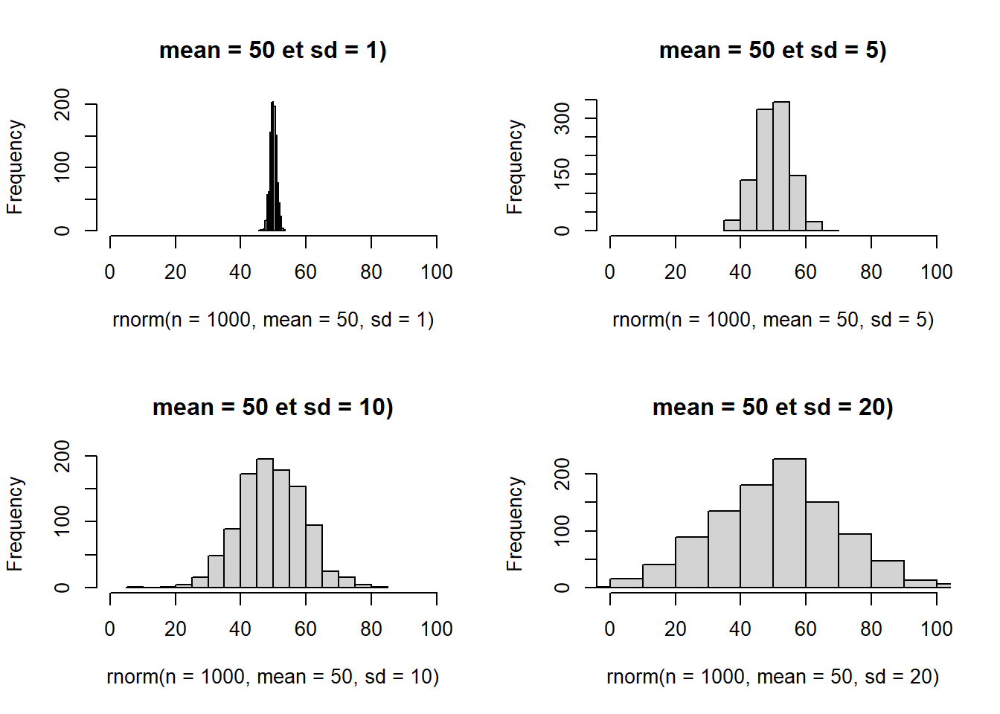

Chapitre 13 S’entrainer
13.1 TP1
Difficult√© üèÜ
Ce TP reprend les notions évoquées dans les chapitres 2 et 3.
On utilise le dataset mtcars qui décrit les statistiques de voitures.
Le dataset est présent dans le package datasets automatiquement installé sur R. Voici une description des données :
mpg: Miles/(US) galloncyl: Number of cylindersdisp: Displacement (cu.in.)hp: Gross horsepowerdrat: Rear axle ratiowt: Weight (1000 lbs)qsec: 1/4 mile timevs: Engine (0 = V-shaped, 1 = straight)am: Transmission (0 = automatic, 1 = manual)gear: Number of forward gearscarb: Number of carburetors
| mpg | cyl | disp | hp | drat | wt | qsec | vs | am | gear | carb | |
|---|---|---|---|---|---|---|---|---|---|---|---|
| Mazda RX4 | 21.0 | 6 | 160.0 | 110 | 3.90 | 2.620 | 16.46 | 0 | 1 | 4 | 4 |
| Mazda RX4 Wag | 21.0 | 6 | 160.0 | 110 | 3.90 | 2.875 | 17.02 | 0 | 1 | 4 | 4 |
| Datsun 710 | 22.8 | 4 | 108.0 | 93 | 3.85 | 2.320 | 18.61 | 1 | 1 | 4 | 1 |
| Hornet 4 Drive | 21.4 | 6 | 258.0 | 110 | 3.08 | 3.215 | 19.44 | 1 | 0 | 3 | 1 |
| Hornet Sportabout | 18.7 | 8 | 360.0 | 175 | 3.15 | 3.440 | 17.02 | 0 | 0 | 3 | 2 |
| Valiant | 18.1 | 6 | 225.0 | 105 | 2.76 | 3.460 | 20.22 | 1 | 0 | 3 | 1 |
| Duster 360 | 14.3 | 8 | 360.0 | 245 | 3.21 | 3.570 | 15.84 | 0 | 0 | 3 | 4 |
| Merc 240D | 24.4 | 4 | 146.7 | 62 | 3.69 | 3.190 | 20.00 | 1 | 0 | 4 | 2 |
| Merc 230 | 22.8 | 4 | 140.8 | 95 | 3.92 | 3.150 | 22.90 | 1 | 0 | 4 | 2 |
| Merc 280 | 19.2 | 6 | 167.6 | 123 | 3.92 | 3.440 | 18.30 | 1 | 0 | 4 | 4 |
Exercice 1 : Préparer son environnement de travail
- Dupliquer le dataset dans un nouvel objet appelé
df. - Combien de lignes, colonnes sont présentes dans ce dataset (utilisez les fonctions adaptées) ?
- Affichez le nom des colonnes
- Affichez le type des colonnes avec la fonction adaptée.
- On souhaite analyser les variables
cyl,vs,am,gearetcarben tant que variables qualitatives. Modifier le type de ces variables pour les transformer en type factor. - Combien de niveaux (levels) sont présents dans ces variables ?
- Affichez un résumé des données avec la fonction adaptée.
Exercice 2 : Statistiques descriptives
- Déterminer la moyenne de la variable
mpg - Déterminer le maximum la variable
wt. - Déterminer la médiane de la variable
hp. - Déterminer les quartiles de la variable
qsec. - Déterminer les déciles de la variable
qsec. - Déterminer la variance et l’écart-type de la variable
qsec. - Déterminer un tri à plat pour compter les effectifs des modalités de chaque variables factor.
Exercice 3 : Quelques graphiques
- Contruire un histogramme de la distribution de la variable
qsec. - Constuire une boîte à moustache de la distribution de la variable
qsec. - Construire un diagramme en barre de répartition de la variable
carb. - Construire un diagramme circulaire de la répartition de la variable
vs.
Exercice 4 : Création de nouvelles colonnes
- La colonne
mpgcorrespond au nombre de miles parcouru en 1 gallon (US). Cette mesure correspond en quelques sortes à la mesure de consommation de litres aux 100 km utilisée en France. Créer une colonne supplémentaire appeléelitres_au_100kmqui correspond à la conversion de la variablempg(Miles/(US) gallon) en nombre de litres aux 100 kilomètres. Aidez-vous du guide des conversion disponible sur ce lien. - Construire une nouvelle colonne appelée
qsec_cutqui est un découpage de la variableqsecen 3 groupes (pas de restriction sur le nombre de classe). - Construire une nouvelle colonne appelée
litres100km_grouppour distinguer deux groupes de voiture : celles qui consomment plus que la moyenne et celles qui consomment moins que la moyenne.
13.2 TP2
Difficult√© üèÜüèÜ
Pokemon
Ce TP reprend les notions évoquées dans les chapitres 2 à 5.
On utilise le fichier pokemon.xlsx qui décrit les statistiques des pokemon des deux premières générations.
Le fichier est issu du site Kaggle. Il a été adapté pour ce TP. Pour réaliser ce TP, télécharger le fichier en cliquant ici.Voici une description des données :
pokedex_number: numéro du pokemonnom: nom du pokemongeneration: le numéro de génération dont est issu le pokemonis_legendary: Oui / Non si le pokemon est légendairetype: le type du pokemonweight_kg: le poids du pokemon en kgheight_m: la taille du pokemon en mètreattack: la puissance d’attaque du pokemondefense: la puissance de défense du pokemonspeed: la vitesse du pokemon
| pokedex_number | nom | generation | is_legendary | type | weight_kg | height_m | attack | defense | speed |
|---|---|---|---|---|---|---|---|---|---|
| 1 | Bulbizarre | 1 | Non | grass | 6.9 | 0.7 | 49 | 49 | 45 |
| 2 | Herbizarre | 1 | Non | grass | 13.0 | 1.0 | 62 | 63 | 60 |
| 3 | Florizarre | 1 | Non | grass | 100.0 | 2.0 | 100 | 123 | 80 |
| 4 | Salameche | 1 | Non | fire | 8.5 | 0.6 | 52 | 43 | 65 |
| 5 | Reptincel | 1 | Non | fire | 19.0 | 1.1 | 64 | 58 | 80 |
| 6 | Dracaufeu | 1 | Non | fire | 90.5 | 1.7 | 104 | 78 | 100 |
| 7 | Carapuce | 1 | Non | water | 9.0 | 0.5 | 48 | 65 | 43 |
| 8 | Carabaffe | 1 | Non | water | 22.5 | 1.0 | 63 | 80 | 58 |
| 9 | Tortank | 1 | Non | water | 85.5 | 1.6 | 103 | 120 | 78 |
| 10 | Chenipan | 1 | Non | bug | 2.9 | 0.3 | 30 | 35 | 45 |
| 11 | Chrysacier | 1 | Non | bug | 9.9 | 0.7 | 20 | 55 | 30 |
| 12 | Papilusion | 1 | Non | bug | 32.0 | 1.1 | 45 | 50 | 70 |
| 13 | Aspicot | 1 | Non | bug | 3.2 | 0.3 | 35 | 30 | 50 |
| 14 | Coconfort | 1 | Non | bug | 10.0 | 0.6 | 25 | 50 | 35 |
| 15 | Dardargnan | 1 | Non | bug | 29.5 | 1.0 | 150 | 40 | 145 |
| 16 | Roucool | 1 | Non | normal | 1.8 | 0.3 | 45 | 40 | 56 |
| 17 | Roucoups | 1 | Non | normal | 30.0 | 1.1 | 60 | 55 | 71 |
| 18 | Roucarnage | 1 | Non | normal | 39.5 | 1.5 | 80 | 80 | 121 |
| 19 | Rattata | 1 | Non | normal | NA | NA | 56 | 35 | 72 |
| 20 | Rattatac | 1 | Non | normal | NA | NA | 71 | 70 | 77 |
Exercice 1 : Importer les données
- Importez le jeu de données
pokemon.xlsxà l’aide du packagereadxl. - Combien de lignes, colonnes sont présentes dans ce dataset (utilisez les fonctions adaptées) ?
- Affichez le nom des colonnes.
- Affichez le type des colonnes avec la fonction adaptée.
- On souhaite analyser les variables
generation,is_legendary, ettypeen tant que variables qualitatives. Modifier le type de ces variables pour les transformer en type factor. - Combien de niveaux (levels) sont présents dans ces variables ?
- Affichez un résumé des données avec la fonction adaptée.
Exercice 2 : Statistiques descriptives
- Déterminer la moyenne de la variable
weight_kg. - Déterminer la médiane de la variable
weight_kg. - Déterminer les quartiles de la variable
height_m. - Déterminer les déciles de la variable
height_m. - Déterminer la variance et l’écart-type de la variable
weight_kg. - Déterminer un tri à plat pour compter les effectifs des modalités de chaque variable factor en triant chaque sortie par ordre décroissant.
Exercice 3 : Tris et Selections
Pour chaque question suivante, affectez le résultat de la requête dans un objet puis calculez sa dimension. Exemple :
#Selectionnez les deux premières colonnes du data frame
requete_0 <- pokemon[,1:2]
dim(requete_0)## [1] 251 2- Sélectionnez la colonne
nometis_legendary. - Sélectionnez les 50 premières lignes et les deux premières colonnes.
- Sélectionnez les 10 premières lignes et toutes les colonnes.
- Sélectionnez toutes les colonnes sauf la dernière.
- Sélectionnez les colonnes 2,8,9 et 10.
- Sélectionnez les lignes 20 à 30 et 80 à 100.
- Triez le dataset par ordre alphabétique et afficher le
nomdu pokemon dela première ligne. - Triez le dataset par
weight_kgen ordre décroissant, et afficher lenomdu pokemon de la première ligne - Triez le dataset par
attacken ordre décroissant puis parspeeden ordre croissant, et afficher lenomdes pokemons des 10 premières lignes.
Exercice 4 : Tris et Filtres
Pour chaque question suivante, affectez le résultat de la requête dans un objet puis calculez sa dimension. Pour faciliter la lecture, sélectionnez la colonne nomet les colonnes concernées par le filtre. Exemple :
#Selectionnez les pokemons de type feu
requete_0 <- pokemon[ pokemon$type == "fire", c("nom","type")]
dim(requete_0)## [1] 20 2- Filtrez sur les pokemons qui ont 150 ou plus d’
attackpuis trier le résultat par ordre décroissant d’attack. - Filtrez sur les pokemons de
typedragon,ghost,psychic et dark - Filtrez sur les pokemons de
typefire avec plus de 100 d’attack, puis trier le résultat par ordre décroissant d’attack. - Filtrez sur les pokemons qui ont entre 100 et 150 de
speed. Les trier parspeeddécroissant. - Filtrez sur les pokemons pesant plus de 250 kg et affichez le résultat pour vérifier.
- Filtrez sur les pokémons qui ont des valeurs manquantes sur la variable
height_m. - Filtrez sur les pokemons qui ont des valeurs renseignées à la fois pour la variable
weight_kget la variableheight.
Exercice 5 : Agregations
Pour chaque question suivante, affectez le résultat de la requête dans un objet puis calculez sa dimension. Exemple :
#Calculez la vitesse moyenne par generation
requete_0 <- aggregate(x = speed ~ generation, data = pokemon , FUN = mean)
dim(requete_0)## [1] 2 2| generation | speed |
|---|---|
| 1 | 70.15232 |
| 2 | 61.61000 |
- Calculez l’
attackmoyenne en fonction de la variabletype, puis filtrez sur les 3 types avec les moyennes les plus élevées. - Calculez le nombre de pokemon par
type, puis triez par ordre décroissant ces effectifs. - Calculez la médiane de
weight_kgpartype. - Calculez le nombre de pokemon par
typeetgeneration - Calculez la moyenne de chaque critère (
weight_kg,height_m,attack,defenseetspeed) en fonction de chaquetype.
13.3 TP3
Difficult√© üèÜüèÜüèÜ
Among us
Ce TP reprend les notions évoquées dans les chapitres 6,7 et 10.
On utilise le fichier compressé AmongUs.7z où l’ensemble des fichiers décrivent les statistiques des parties jouées sur le jeu Among Us. Il y a un fichier par joueur nommé UserX.csv.
Les données sont issues du site Kaggle. Pour réaliser ce TP, télécharger le fichier en cliquant ici.
Les fichiers csv ont tous la même structure avec :
Game.Completed.Date: Date de la partieTeam: l’équipe attribuéeOutcome: résultat de la partieTask.Completed: le nombre de tâches effectuéesAll.Tasks.Completed: si toutes les tâches ont été effectuéesMurdered: si le joueur a été tuéImposter.Kills: le nombre de joueurs tués par l’imposteurGame.Length: durée de la partieEjected: si le joueur a été éliminé par les autres au cours de la partieSabotages.Fixed: nombre de sabotages réparésTime.to.complete.all.tasks: temps pour compléter les toutes les tâchesRank.Change: Non renseignéRegion.Game.Code: la région du serveur de jeu
| Game.Completed.Date | Team | Outcome | Task.Completed | All.Tasks.Completed | Murdered | Imposter.Kills | Game.Length | Ejected | Sabotages.Fixed | Time.to.complete.all.tasks | Rank.Change | Region.Game.Code |
|---|---|---|---|---|---|---|---|---|---|---|---|---|
| 12/13/2020 at 1:26:56 am EST | Crewmate | Win | 3 | No | Yes |
|
07m 04s | No | 2 |
|
++ | NA / WYMSBF |
| 12/13/2020 at 1:17:42 am EST | Crewmate | Loss | 7 | Yes | No |
|
16m 21s | No | 1 | 09m 48s | – | NA / WYMSBF |
| 12/13/2020 at 12:57:47 am EST | Crewmate | Win | 3 | No | No |
|
11m 33s | No | 0 |
|
++ | NA / WYMSBF |
| 12/13/2020 at 12:41:55 am EST | Imposter | Win |
|
|
|
2 | 08m 05s | No | N/A |
|
+++ | Europe / QIRTNF |
| 12/13/2020 at 12:30:37 am EST | Crewmate | Loss | 4 | No | No |
|
05m 10s | No | 0 |
|
— | Europe / QIRTNF |
| 12/13/2020 at 12:24:20 am EST | Crewmate | Loss | 7 | Yes | Yes |
|
16m 22s | No | 0 | 12m 16s | – | Europe / QIRTNF |
| 12/13/2020 at 12:00:39 am EST | Crewmate | Loss | 8 | Yes | Yes |
|
21m 41s | No | 1 | 18m 38s | – | Europe / MTKPVF |
| 12/11/2020 at 4:15:08 pm EST | Crewmate | Win | 8 | Yes | No |
|
18m 43s | Yes | 0 | 07m 48s | ++ | Europe / BFRJCF |
| 12/11/2020 at 3:49:33 pm EST | Crewmate | Win | 7 | Yes | Yes |
|
13m 15s | No | 0 | 13m 15s | ++ | Europe / BFRJCF |
| 12/11/2020 at 3:30:36 pm EST | Crewmate | Loss | 7 | Yes | Yes |
|
12m 43s | No | 0 | 12m 43s | – | Europe / BFRJCF |
| 12/11/2020 at 3:10:58 pm EST | Crewmate | Win | 4 | No | Yes |
|
11m 00s | No | 0 |
|
++ | Europe / BFRJCF |
| 12/11/2020 at 2:53:28 pm EST | Crewmate | Win | 7 | Yes | No |
|
17m 43s | No | 0 | 11m 59s | ++ | Europe / BFRJCF |
| 12/11/2020 at 2:20:38 pm EST | Crewmate | Loss | 6 | No | Yes |
|
13m 46s | No | 0 |
|
— | Europe / ONSJWQ |
| 12/11/2020 at 2:04:26 pm EST | Imposter | Loss |
|
|
|
3 | 15m 52s | Yes | N/A |
|
|
Europe / ONSJWQ |
| 12/11/2020 at 1:46:30 pm EST | Crewmate | Win | 7 | Yes | Yes |
|
18m 54s | No | 1 | 11m 09s | ++ | Europe / ONSJWQ |
| 12/11/2020 at 2:09:32 am EST | Crewmate | Loss | 7 | Yes | Yes |
|
08m 00s | No | 0 | 01m 41s | – | NA / EYNONF |
| 12/11/2020 at 2:00:26 am EST | Crewmate | Win | 7 | Yes | Yes |
|
18m 06s | No | 0 | 09m 34s | ++ | NA / EYNONF |
| 12/11/2020 at 1:26:11 am EST | Crewmate | Win | 7 | Yes | Yes |
|
12m 58s | No | 1 | 09m 03s | ++ | NA / EYNONF |
| 12/11/2020 at 1:03:05 am EST | Crewmate | Win | 7 | Yes | Yes |
|
14m 57s | No | 0 | 14m 50s | ++ | NA / EYNONF |
| 12/11/2020 at 12:45:34 am EST | Crewmate | Loss | 7 | Yes | Yes |
|
11m 03s | No | 0 | 10m 34s | – | NA / EYNONF |
Exercice 1 : Créer le jeu de données
- Télécharger le fichier compressé
AmongUs.7zet le déziper. La fonctionlist.files()devrait vous aider à extraire l’ensemble des noms de fichiers présents dans un répertoire (voir l’exemple ci-dessous).
list.files(path = "dataset/", pattern="*.csv", full.names=FALSE)## [1] "AmongUs.csv" "flights.csv" "google.csv"
## [4] "Hotdogs.csv" "NBA.csv" "planes.csv"
## [7] "starwars.csv" "students_results.csv" "Titanic.csv"
## [10] "tv_shows.csv"- Compiler l’ensemble des fichiers UserX.csv présents dans le fichier zip dans un seul et même data frame. Utiliser une boucle qui parcourt chaque fichier csv utilisateur. La fonction
rbind()devrait vous aider à compiler les différents csv dans un seul data frame (voir l’exemple ci-dessous).
üì¢ Attention, pour le bon d√©roulement du TP, int√©grer l‚ÄôargumentstringsAsFactors = FALSEdans votre fonctionread.csv(). Cet argument permet de ne pas typer par d√©faut les variablescharacterenfactorlors de l‚Äôimportation.
df <- data.frame()
dim(df)## [1] 0 0df <- rbind(df, mtcars)
dim(df)## [1] 32 11df <- rbind(df, mtcars)
dim(df)## [1] 64 11Modifier votre boucle afin d’ajouter une colonne dans le data frame final qui renseigne le numéro d’utilisateur disponible dans le nom de chaque fichier csv.
üí° indice : Il est plus simple d‚Äôajouter une colonne avec le nom du fichier juste avant la fonctionrbind().Stocker le data frame final dans un objet appel√© AmongUs.
Supprimer la colonne
Rank.Changequi est inutile.On observe des valeurs manquantes dans le dataset à travers les champs
-etN/A, on souhaite remplacer ces valeurs textuelles par la véritable valeurNApermettant d’indiquer à R que la valeur est manquante. Construire une fonction appeléemanage_na()qui prend en entrée :
- un vecteur
xcorrespondra à une colonne d’un dataset. - un vecteur
string_to_nacorrespondant à la liste des chaînes de caractères qu’on souhaite transformer enNA.
La fonction retournera le vecteur modifié.
üí° indice : voici ci-dessous la t√™te que doit avoir votre fonction :
manage_na <- function(x, string_to_na) {
...
...
...
return(x_modif)
}- Construire une boucle qui parcourt toutes les colonnes du data frame AmongUs et qui remplace les champs avec des
-etN/Apar des valeurs manquantesNA. Utilisez la fonctionmanage_na()créée précédemment.
Exercice 2 : Manipuler le texte et les dates
À partir de la colonne
Game.Completed.Date, construire une colonne appeléeDateavec la date de la partie au format yyyy-mm-dd uniquement. Veiller à ce que le type de cette colonne soit Date.À partir de la colonne
Game.Completed.Date, construire une colonne appeléeHeureavec l’heure uniquement de la partie. Attention au format am et pm.À partir de la colonne
Game Length, construire une colonne appeléeGame.Length.seccorrespondant à la durée de la partie en secondes.À partir de la colonne
Time.to.complete.all.tasks, construire une colonne appeléeComplete.all.tasks.seccorrespondant à la durée en secondes pour compléter toutes les tâches.À partir de la colonne
Region.Game.Codeconstruire une colonne appeléeRegioncorrespondant au nom du continent uniquement.
Exercice 3 : Type des variables
Combien de lignes, colonnes sont présentes dans ce dataset (Utiliser la fonction adaptée) ?
Afficher un résumé des données avec la fonction adaptée.
Veiller à ce que les types de chaque colonne du dataset correspondent aux types ci-dessous. Sinon, convertir les variables dans leur type approprié.
| Variable | Type souhaité |
|---|---|
| Game.Completed.Date | character |
| Team | factor |
| Outcome | factor |
| Task.Completed | numeric |
| All.Tasks.Completed | factor |
| Murdered | factor |
| Imposter.Kills | numeric |
| Game.Length | character |
| Ejected | factor |
| Sabotages.Fixed | numeric |
| Time.to.complete.all.tasks | character |
| Region.Game.Code | character |
| Date | Date |
| Heure | numeric |
| Game.Length.sec | numeric |
| Complete.all.tasks.sec | numeric |
| Region | factor |
üì¢ Attention, lorsqu‚Äôon convertit un vecteur de type factor en type numeric, il est recommand√© de passer d‚Äôabord par le type character (voir exemple ci-dessous). Ce ne sera peu √™tre pas utile pour ce TP, mais c‚Äôest bien de le savoir !
Ce qu’il ne faut pas faire ⛔
x <- factor(c(7,7,8,7,9,6,6))
levels(x)## [1] "6" "7" "8" "9"x <- as.numeric(x)
x## [1] 2 2 3 2 4 1 1Ce qu’il faut faire ✅
x <- factor(c(7,7,8,7,9,6,6))
levels(x)## [1] "6" "7" "8" "9"x <- as.numeric(as.character(x))
x## [1] 7 7 8 7 9 6 6- Vérifier si cela a fonctionné en affichant le type de chaque variable du data frame.
Exercice 4 : Analyses statistiques
La plupart des questions de cet exercice demandent un peu de réflexion.
üì¢ Ne partez pas √† l‚Äôabordage, les solutions peuvent se coder en plusieurs √©tapes (tris,filtres, agregations, etc.).
Quelle est la durée moyenne d’une partie ?
Combien y-a-t-il de régions serveurs différentes ?.
Combien de tâche maximum un Crewmate peut-il réaliser ?
Quel est le taux de parties remportées par les imposteurs ?
Construire un graphique adapté permettant de visualiser la répartition du nombre de parties jouées selon la
Region.Construire un graphique adapté permettant de visualiser la répartition des joueurs qui termine ou pas leurs tâches selon s’ils se font tuer ou pas.
Construire un graphique adapté permettant de visualiser la distribution du nombre de tâches complétées par les joueurs.
Construire un graphique adapté permettant de visualiser pour chaque partie jouée, la durée de la partie et le temps pour compléter toutes les tâches.
Construire un graphique adapté permettant de visualiser la distribution du temps des parties selon la
Region.Construire un graphique adapté permettant de visualiser l’évolution du nombre de parties jouées selon l’heure de la journée.
Construire un graphique adapté permettant de visualiser les variations du taux de succès des imposteurs selon les régions serveurs.
Construire un graphique adapté permettant de visualiser les taux de succès des 5 meilleurs utilisateurs.
13.4 TP4
Difficult√© üèÜüèÜ

NBA
Ce TP reprend les notions évoquées dans les chapitres 2 à 7.
On utilise le fichier NBA.csv qui décrit les tirs effectués au cours de la saison 2014-2015 de NBA. Le fichier est issu du site Kaggle. Il a été adapté et modifié pour ce cours. Les données sont accessibles en cliquant ici.
Voici la présentation du jeu de données :
GAME_ID: ID du matchLOCATION: Lieu du match (Home / Away)GAME_RESULT: Résultat du match (Won / Lost)PERIOD: Numéro de quart-temps et prolongations éventuellesSHOT_CLOCK: Durée de la possession de l’équipe au moment du tirDRIBBLES: Nombre de dribbles avant le tirTOUCH_TIME: Durée de la possession du joueur avant le tirSHOT_DIST: Distance de tir en foot (1 foot = 0,30 mètre)PTS_TYPE: Tentative à 2 ou 3 points (les lancers francs à 1 point ne sont pas répertoriés)SHOT_RESULT: Résultat du tir (made / missed)CLOSE_DEF_DIST: Distance entre le tireur et le défenseur le plus proche en foot (1 foot = 0,30 mètre)SHOOTER: Nom du tireur
| GAME_ID | LOCATION | GAME_RESULT | PERIOD | SHOT_CLOCK | DRIBBLES | TOUCH_TIME | SHOT_DIST | PTS_TYPE | SHOT_RESULT | CLOSE_DEF_DIST | SHOOTER |
|---|---|---|---|---|---|---|---|---|---|---|---|
| 21400899 | A | W | 1 | 10.8 | 2 | 1.9 | 7.7 | 2 | made | 1.3 | brian roberts |
| 21400899 | A | W | 1 | 3.4 | 0 | 0.8 | 28.2 | 3 | missed | 6.1 | brian roberts |
| 21400899 | A | W | 1 | NA | 3 | 2.7 | 10.1 | 2 | missed | 0.9 | brian roberts |
| 21400899 | A | W | 2 | 10.3 | 2 | 1.9 | 17.2 | 2 | missed | 3.4 | brian roberts |
| 21400899 | A | W | 2 | 10.9 | 2 | 2.7 | 3.7 | 2 | missed | 1.1 | brian roberts |
| 21400899 | A | W | 2 | 9.1 | 2 | 4.4 | 18.4 | 2 | missed | 2.6 | brian roberts |
| 21400899 | A | W | 4 | 14.5 | 11 | 9.0 | 20.7 | 2 | missed | 6.1 | brian roberts |
| 21400899 | A | W | 4 | 3.4 | 3 | 2.5 | 3.5 | 2 | made | 2.1 | brian roberts |
| 21400899 | A | W | 4 | 12.4 | 0 | 0.8 | 24.6 | 3 | missed | 7.3 | brian roberts |
| 21400890 | H | W | 2 | 17.4 | 0 | 1.1 | 22.4 | 3 | missed | 19.8 | brian roberts |
| 21400890 | H | W | 2 | 16.0 | 8 | 7.5 | 24.5 | 3 | missed | 4.7 | brian roberts |
| 21400890 | H | W | 4 | 12.1 | 14 | 11.9 | 14.6 | 2 | made | 1.8 | brian roberts |
| 21400890 | H | W | 4 | 4.3 | 2 | 2.9 | 5.9 | 2 | made | 5.4 | brian roberts |
| 21400882 | A | W | 4 | 4.4 | 0 | 0.8 | 26.4 | 3 | missed | 4.4 | brian roberts |
| 21400859 | A | L | 1 | 6.8 | 0 | 0.5 | 22.8 | 3 | missed | 5.3 | brian roberts |
| 21400859 | A | L | 2 | 6.4 | 3 | 2.7 | 24.7 | 3 | made | 5.6 | brian roberts |
| 21400859 | A | L | 2 | 17.6 | 6 | 5.1 | 25.0 | 3 | missed | 5.4 | brian roberts |
| 21400859 | A | L | 4 | 8.7 | 1 | 0.9 | 25.6 | 3 | missed | 5.1 | brian roberts |
| 21400859 | A | L | 4 | 20.8 | 0 | 1.2 | 24.2 | 3 | made | 11.1 | brian roberts |
| 21400845 | A | W | 1 | 17.5 | 2 | 2.2 | 25.4 | 3 | missed | 3.5 | brian roberts |
Exercice 1 : Importer les données
- Importer le jeu de données
NBA.csvavec la fonctionread.csv(). - Combien de lignes, colonnes sont présentes dans ce dataset (utilisez les fonctions adaptées) ?
- Afficher le nom des colonnes.
- Afficher le type des colonnes avec la fonction adaptée.
- On souhaite analyser les variables
PERIOD,PTS_TYPE, etSHOOTERen tant que variables qualitatives. Modifier le type de ces variables pour les transformer en type factor. - Combien de niveaux (levels) sont présents dans ces variables ?
- Afficher un résumé des données avec la fonction adaptée.
Exercice 2 : Statistiques descriptives
- Calculer l’écart-type de la variable présentant la distance de tir (
SHOT_DIST). - Calculer l’écart-type de la variable présentant la durée de la possession de l’équipe au moment du tir (
SHOT_CLOCK). - Calculer la répartition du nombre de tirs manqués et réussis (
SHOT_RESULT). - Calculer les quartiles de la variable présentant le nombre de dribbles avant un tir (
DRIBBLES). - Calculer les déciles de la variable présentant la distance entre le tireur et le défenseur le plus proche (
CLOSE_DEF_DIST). - Combien de matchs se sont déroulés lors de cette saison de basket ?
- Combien y-a-t-il de
SHOOTERdifférents ?
Exercice 3 : Modifier le jeu de données
- Créer une variable
SHOT_DIST_METREqui affiche la variableSHOT_DISTconvertit en mètre (1 foot = 0,30 mètre). - Créer une variable
PTS_MARQUESqui prend la valeur 0, 2 ou 3 en fonction de l’issue du tir. - Supprimer la variable
GAME_RESULTcar elle est inutile.
Exercice 4 : Interroger les données
Attention, certaines questions peuvent nécessiter plusieurs étapes. Penser à vérifier vos requêtes avec la fonction dim() ou View().Pour chaque question, affecter le résultat ddans un objet comme dans l’exemple ci-dessous.
#Selectionnez les deux premières colonnes du data frame
requete_0 <- NBA[, c(1,2)]- On souhaite extraire uniquement la colonne
SHOOTER,SHOT_RESULTetPTS_TYPEdans cet ordre. - On souhaite extraire uniquement les 50 premières lignes.
- On souhaite extraire toutes les colonnes sauf la première.
- On souhaite extraire uniquement les 100 tirs tentés avec les
SHOT_DISTles plus loin. - On souhaite extraire uniquement les 100 tirs réussis avec les
SHOT_DISTles plus loin. - On souhaite extraire uniquement les tirs réussis à 3 points de kobe bryant.
- On souhaite construire un data frame avec les 5
SHOOTERqui ont inscrit le plus de points.
Bonus
On souhaite construire un programme permettant de parcourir l’ensemble des colonnes du data frame :
Si la colonne est
numeric,on souhaite construire un boxplot.Si la colonne est
factor, on souhaite construire un barplot.Sinon, on ne fait rien.
Pensez à ajouter un titre sur les graphiques afin de savoir à quelle variable on a à faire.
Dans une boucle,lorsqu’on souhaite affcher un graphique ou une sortie dans la console, il faut utiliser la fonction
print().
13.5 TP5 - Chercher l’erreur
Difficult√© üèÜüèÜ
mistake
Ce TP reprend les notions évoquées dans les chapitres 2 à 7. Dans ce TP, vous incarnez un data analyst travaillant dans le service statistique de la NBA. Un de vos collègues est parti en vacances vendredi dernier et a envoyer à votre manager quelques statistiques sur les tirs effectués au cours de la saison 2014-2015.
Le problème c’est que le script est bourré de fautes ! Rien ne fonctionne, à tous les coups, votre collègue était pressé de partir en vacance. Votre manager fait donc appel à vous pour corriger les erreurs de ce script. Attention, votre manager aimerait également comprendre ce que vous programmez dans votre script alors n’oubliez pas de commenter chaque ligne de code pour qu’il la comprenne. Le fichier de données (NBA.csv) et le script de votre collègue (nba_stats.R) sont disponibles en cliquant ici.
üéØ Votre manager a d√©j√† pass√© beaucoup de temps pour comprendre ce script et aimerait que votre correction garde la m√™me philosophie que le script de votre coll√®gue, cela signifie qu‚Äôil ne faut pas √©crire d‚Äôautres commandes R et simplement faire en sorte que celles d√©j√† pr√©sentes fonctionnent.

script1
script2

script3
script4
13.6 TP6 - Analyses statistiques
Difficult√© üèÜüèÜ

Students
Ce TP reprend les notions évoquées dans les chapitres 2 à 5.
On utilise le fichier students_results.csv qui décrit les notes d’étudiants sur différentes épreuves.
Pour réaliser ce TP, télécharger le fichier en cliquant ici. Voici une description des données :
ID_etudiant: Le matricule des étudiantsGenre: Le genre des étudiantsGroupe.TP: Le groupe de travaux pratiquesGroupe.TD: Le groupe de travaux dirigésQUIZ#: Le score du quiz numéro #TP#: La note au TP numéro #
| ID_etudiant | Genre | Groupe.TP | Groupe.TD | QUIZ1 | QUIZ2 | TP1 | TP2 | TP4 |
|---|---|---|---|---|---|---|---|---|
| 42247 | F | 1 | 1 | 39774 | 25587 | 0.8095238 | 0.6470588 | 14.00 |
| 84675 | F | 1 | 1 | 27029 | 16083 | 0.9523810 | 0.6470588 | 14.50 |
| 93817 | F | 1 | 1 | 24839 | 20601 | 0.9523810 | NA | 13.00 |
| 22886 | H | 1 | 1 | 33835 | 22853 | 0.7619048 | 0.7794118 | 13.50 |
| 49060 | H | 1 | 1 | 31817 | 21322 | 0.8095238 | 0.8823529 | 16.00 |
| 66756 | H | 1 | 1 | NA | NA | NA | NA | NA |
| 48147 | H | 1 | 1 | 30572 | 18889 | 0.9523810 | 0.6470588 | 15.00 |
| 86478 | H | 1 | 1 | 26072 | 16057 | 0.8095238 | NA | 7.25 |
| 9082 | H | 1 | 1 | 32028 | 25880 | 0.8095238 | 0.6470588 | 13.00 |
| 2851 | H | 1 | 1 | 32945 | 25293 | 0.8095238 | NA | 11.00 |
| 94187 | H | 1 | 1 | NA | NA | NA | NA | NA |
| 2060 | H | 1 | 1 | 31588 | 17365 | 0.7619048 | 0.7794118 | 12.50 |
| 79464 | H | 1 | 1 | 34180 | 32996 | 0.8809524 | NA | 7.00 |
| 42086 | H | 1 | 1 | 36817 | 21302 | 0.9523810 | 1.0000000 | 19.00 |
| 4921 | F | 2 | 1 | 27838 | 20305 | 0.9523810 | 1.0000000 | 13.50 |
| 23653 | H | 2 | 1 | 33856 | 18854 | 0.9047619 | 0.9117647 | 16.50 |
| 26956 | H | 2 | 1 | 33375 | 18970 | 1.0000000 | 1.0000000 | 19.00 |
| 10702 | H | 2 | 1 | 34778 | 15677 | 1.0000000 | 1.0000000 | 13.50 |
| 22 | H | 2 | 1 | 36265 | 22377 | 1.0000000 | 1.0000000 | 17.50 |
| 3179 | H | 2 | 1 | 32809 | 23123 | 0.9047619 | 0.9117647 | 18.50 |
Exercice 1 : Importer les données
- Importer le jeu de données
students_results.csvavec la fonctionread.csv(). - Combien de lignes, colonnes sont présentes dans ce dataset (utilisez les fonctions adaptées) ?
- Afficher le nom des colonnes.
- Afficher le type des colonnes avec la fonction adaptée.
- Afficher un résumé des données avec la fonction adaptée.
- On souhaite analyser les variables
Groupe.TPetGroupe.TDen tant que variables qualitatives. Modifier le type de ces variables pour les transformer en type factor.
Exercice 2 : Statistiques descriptives
Ajouter une colonne appelée
TOTAL_QUIZqui correspond à la somme des notes des quiz.Déterminer la moyenne du score total des quiz. Proposez un graphique adapté pour visualiser la distribution de tous les scores totaux des étudiants
Déterminer les déciles des notes du TP4. Proposez un autre graphique pour visualiser la distribution des notes des étudiants au TP4.
Déterminer le nombre d’étudiants par groupe de TP. Proposez un graphique adapté pour visualiser cette répartition par groupe.
Déterminer le nombre d’étudiants par genre. Proposez un autre graphique pour visualiser cette répartition par genre.
Exercice 3 : Qui sont les meilleurs ?
- Proposer un graphique adapté pour visualiser la distribution du score total aux quiz par genre.
- Calculer la moyenne du score total aux quiz par genre
- Proposer un graphique adapté pour visualiser la distribution du score total aux quiz par groupe de TP.
- Calculer la moyenne du score total aux quiz par groupe de TP.
- On souhaite visualiser avec un graphique adapté le score total aux quiz uniquement des 5 meilleurs étudiants.
- On souhaite conserver les lignes uniquement des 3 meilleur(e)s étudiant(e)s du groupe de TP 1.
Exercice 4 : Allez plus loin
Dans cet exercice, nous allons aller plus loin sur des notions qu’on peut retrouver en analyses statistiques comme des corrélations et des régressions linéaires. On va déterminer quelle variable est la plus corrélée avec la note du TP4 qui a été réalisé en condition d’examen. Puis nous modéliserons cette relation.
- Y-a-t-il une corrélation entre la note au TP4 et le score total aux quiz ? Pour cela, utiliser la fonction
cor(). Voici un exemple d’utilisation avec le datasetirisci-dessous:
help("cor")cor(x = iris$Sepal.Length, y = iris$Sepal.Width)## [1] -0.1175698- On peut aussi utiliser la fonction
cor()où l’argumentxest un data frame avec uniquement les variables quantitatives qu’on souhaite analyser. Cela permet d’obtenir ce qu’on appelle une matrice de corrélation. Voici ci-dessous un exemple d’utilisation avec le datasetiris. Construire la matrice de corrélation des scores aux quiz et des notes des TP.
#On construit la matrice de corrélation sur le dataset iris en excluant la colonne 5 qui est qualitative
cor(iris[ , -5])## Sepal.Length Sepal.Width Petal.Length Petal.Width
## Sepal.Length 1.0000000 -0.1175698 0.8717538 0.8179411
## Sepal.Width -0.1175698 1.0000000 -0.4284401 -0.3661259
## Petal.Length 0.8717538 -0.4284401 1.0000000 0.9628654
## Petal.Width 0.8179411 -0.3661259 0.9628654 1.0000000La fonction
corrplot()du packagecorrplotdu même nom permet de visualiser une matrice de corrélation. Ce graphique s’appelle aussi un corrélogramme. Construire un corrplot de la matrice de corrélation calculée précédemment. Consulter cette page pour plus d’information. En le personnalisant, on peut obtenir le corrélogramme ci-dessous :Quelle est la variable la plus corrélée avec la note au TP4 ?
Pour illustrer cette corrélation, construire un nuage de points des notes du TP4 en fonction de la variable la plus corrélée comme ci-dessous :
- On observe une relation linéaire entre ces deux variables. On va calculer la droite qui permet de modéliser cette relation On parle alors de droite de régression. Cette méthode permet d’établir une relation mathématique entre une variable explicative \(x\) et une variable à expliquer \(y\) telles que \(y = ax + b\) où :
- \(a\) est le coefficient directeur aussi appelé la pente.
- \(b\) est la constante où la valeur de l’ordonnée \(y\) lorsque l’abscisse \(x\) vaut 0.

lm
Calculer ces deux indicateurs sachant que :
\(a = \frac{s_{xy}}{s^2_x}\) où \(s_{xy}\) est la covariance entre \(x\) et \(y\) et \(s^2_x\) est la variance de la variable explicative. On peut la calculer avec la fonction
cov().\(b=\bar{y}-a\bar{x}\) où \(\bar{x}\) et \(\bar{y}\) correspondent respectivement à la moyenne de la variable explicative et la variable à expliquer.
üì¢ Il est recommand√© de calculer ces indicateurs sur un tableau filtr√© avec uniquement les lignes ne pr√©sentant pas de valeurs manquantes sur la variable explicative et la note au TP4.
## [1] "Le coefficient directeur a vaut 14.2"## [1] "La constante b vaut 2.79"- Après avoir calculé \(a\) et \(b\), Tracer la droite de régression sur le nuage de points avec la fonction
abline().
help("abline")
- En réalité, pour éviter tous ces calculs, on peut directement utiliser la fonction
lm()qui gère déjà les valeurs manquantes.
help("lm")modele <- lm(TP4 ~ TP2, data = df)
modele$coefficients## (Intercept) TP2
## 2.789817 14.203363plot(x = df$TP2, y = df$TP4,
xlim = c(0,1), ylim = c(0,20),
xlab = "TP2", ylab = "TP4",
main = "Note du TP4 en fonction de la note du TP2")
abline(modele)13.7 TP7 - Analyse de film
Difficult√© üèÜüèÜ
Streaming
Ce TP reprend les notions évoquées dans les chapitres 2 à 6.
On utilise le fichier tv_shows.csv qui décrit les notes d’évaluation des films et séries disponibles sur diverses plateformes de diffusion en continu. Le fichier est issu du site Kaggle. Il a été adapté pour ce TP. Pour réaliser ce TP, télécharger le fichier en cliquant ici.Voici une description des données :
Title: titre de la série ou du filmYear: Année de sortie ou première diffusionAge: Type de public conseilléIMDb: Notes des utilisateurs enregistrés sur le site L’Internet Movie DatabaseRotten.Tomatoes: Notes basées sur les opinions de centaines de critiques de cinéma et de télévision du site du même nomNetflix: si le film ou la série est disponible sur cette plateformeHulu: si le film ou la série est disponible sur cette plateformePrime.Video: si le film ou la série est disponible sur cette plateformeDisney.: si le film ou la série est disponible sur cette plateforme
Exercice 1 : Importer les données
- Importer le jeu de données
tv_shows.csvavec la fonctionread.csv. - Combien de lignes, colonnes sont présentes dans ce dataset (utilisez la ou les fonctions adaptées) ?
- Afficher le nom des colonnes.
- Afficher un résumé des données avec la fonction adaptée.
- On souhaite analyser les variables
Yearen tant que variable qualitative. Modifier le type de cette variable pour la transformer en type factor. - Afficher le type de chaque variable avec la fonction adaptée.
- Construire une colonne appelée
Total_plateformeavec le nombre de plateforme où est disponible le film ou la série.
Exercice 2 : Statistiques descriptives
üë®ü誂Äçüè´ Ne pas oublier de mettre des titres sur vos graphiques !
- Déterminer la moyenne des notes
IMDb. - Déterminer le nombre de modalités de type de public conseillé (variable
Age). - Déterminer les centiles des notes
Rotten.Tomatoes. - Déterminer l’écart-type des notes
IMDbpuisRotten.Tomatoes. - Représenter graphiquement la distribution des notes utilisateurs (variable
IMDb). - Déterminer un tri à plat pour compter les effectifs des modalités de type de public conseillé (variable
Age). - Représenter graphiquement ce tri à plat de la modalité la plus représentée à la moins représentée.
- Calculer la répartition en pourcentage du nombre de films ou séries présents sur la plateforme Netflix.
- Représenter graphiquement cette répartition dans un diagramme circulaire.
- Représenter graphiquement la distribution des notes utilisateurs (variable
IMDb) selon le type de public conseillé (variableAge).
Exercice 3 : Tris, filtres et agrégations
üí° On peut v√©rifier si la question est correcte en affichant le r√©sultat dans une vue.
Construire un objet
requete_aavec uniquement les films grands public (variableAge: all). Puis les trier de la note utilisateur (variableIMDb) de la plus élevée à la plus basse.Construire un objet
requete_bavec uniquement les films ayant une note utilisateur (variableIMDb) supérieure ou égale à 9. Puis les trier par année de sortie de la plus ancienne à la plus récenteConstruire un objet
requete_cavec uniquement les films ayant une note utilisateur (variableIMDb) et une note critique (variableRotten.Tomatoes) qui soient renseignées. Puis les trier par ordre alphabétique (de A à Z)Construire un objet
requete_davec la moyenne des notes utilisateurs (variableIMDb) selon le type de public conseillé (variableAge). Puis les trier de la note utilisateur (variableIMDb) de la plus élevée à la plus basse.
Bonus
Représenter grahiquement le lien entre les notes utilisateurs et les notes des critiques.
Calculer le coefficient de corrélation entre les notes utilisateurs et les notes des critiques. Attention, les
NApourraient vous poser des problèmes mais avecuse = "complete.obs"dans la fonction cela devrait fonctionner.
13.8 TP8 - Algo
Pour réaliser ce TP, vous aurez besoin des ressources suivantes :
- Les listes
- Les fonctions
- Les fonctions de tests et opérateurs de comparaison
- Construire une fonction
- Construire une structure conditionnelle
- Construire une boucle
13.8.1 Salaire net
Dans cet exercice, vous allez devoir programmer plusieurs fonctions pour calculer le salaire net à partir d’un salaire brut. Cette page web vous sera utile pour comprendre les éléments qui interviennent dans le calcul. Pour faciliter le développement, utilisez uniquement le salaire brut mensuel.
Exercice 1 : Brut vers Net avant impôt pour les non-cadres uniquement
Programmez une fonction appelée brutToNet1 qui prend en entrée un salaire brut mensuel. La fonction retourne le salaire net avant impôt pour les non cadres. Nous souhaitons également que la fonction gère les erreurs si les arguments donnés à la fonction ne sont pas du bon type (ex : le salaire brut doit-être numeric). En cas d’erreur, la fonction doit renvoyer “ERROR : type not expected”. Pour information, les non-cadres ont un 22% de cotisations salariales. Pensez à tester votre fonction pour vous autocorriger.
Exercice 2 : Brut vers Net après impôt pour cadres et non-cadres
Programmez une fonction appelée brutToNet2 qui prend en entrée un salaire brut mensuel et le statut du contrat (cadre/non-cadres). Le taux de prélèvement à la source est fixe à 7,5%. La fonction retourne le salaire net après impôt. Pour information, les non-cadres ont un 22% de cotisations salariales contre 25% pour les cadres. Nous souhaitons également que la fonction gère les erreurs si l’argument contrat n’est pas correct. Pour cette erreur, la fonction doit renvoyer “ERROR : contract unknown”. Pensez à tester votre fonction pour vous autocorriger.
Exercice 3 : Brut vers Net après impôt pour cadres et non-cadres
Programmez une fonction appelée brutToNet3 qui prend en entrée :
- un salaire brut mensuel (obligatoire)
- le statut du contrat cadre/non-cadres (obligatoire)
- le taux de prélèvement à la source (par défaut 7,5%)
- le temps de travail entre 0 et 100% (par défaut 100%)
La fonction retourne une liste avec deux objets :
- le salaire net avant impôt
- le salaire net après impôt
Nous souhaitons également que la fonction gère les erreurs si taux de prélèvement et le temps de travail ne sont pas compris entre 0 et 100%. En cas d’erreur, la fonction doit renvoyer “ERROR : rate and time must be in range(0,100)”. Pensez à tester votre fonction pour vous autocorriger.
13.8.2 Relevé d’imposition
Qui dit alternance, dit impôt sur le revenu ! Cet exercice n’a aucun lien avec le précédent. Programmez une fonction appelée netAnnuelToImpot qui prend en entrée un salaire net annuel imposable. La fonction doit retourner le montant total de l’impôt. Voici comment calculer le montant total de l’impôt :

13.8.3 Juste prix
Dans cet exercice, vous allez coder le jeu du juste prix.
Le joueur doit deviner un prix (entier), il fait des propositions en saisissant au clavier et à chaque proposition le programme lui dit si “c’est plus” ou si “c’est moins. Il gagne lorsqu’il a trouvé le juste prix.
Le joueur choisit le mode du jeu entre :
- Mode facile : le joueur a autant de tentatives qu’il souhaite et le jeu doit s’arrêter lorsque le joueur a trouvé le prix
- Mode difficile : le joueur n’a que 10 essais pour trouver le nombre mystère ; si le joueur trouve en moins de 10 essais il gagne et la partie s’arrête, sinon il perd.
Voici la ligne de commande pour demander à l’utilisateur de saisir une valeur :
user_choice <- readline(prompt = "Saisissez une valeur textuelle : ")Pour simuler le choix de l’ordinateur, vous pouvez utiliser la fonction suivante :
ai_choice <- sample(x = 1:100,size = 1)13.8.4 Pierre, feuille, ciseaux
Dans ce jeu, l’utilisateur peut jouer plusieurs parties. La fonction prend en entrée le nombre de parties que le joueur souhaite faire. Pour chaque partie l’utilisateur saisit son choix au clavier et le programme retourne ensuite une liste avec :
- le choix du programme
- si l’utilisateur a gagné, perdu, ou fait match nul
La fonction doit retourner le nombre de partie gagnante pour l’utilisateur lorsque toutes les parties ont été jouées.
Pour simuler le choix de l’ordinateur, vous pouvez utiliser la fonction suivante :
ai_choice <- sample(x = c("Pierre","Feuille","Ciseaux"),size = 1)13.9 TP Formation
Complétez les exercices suivants en utilisant. Créez les vecteurs demandés et répondez aux questions en sélectionnant les éléments appropriés dans les vecteurs.
13.9.1 Création de vecteur
- Créer un vecteur appelé “nombres” contenant les chiffres de 1 à 10.
- Créer un vecteur appelé “mois” contenant les noms des mois de l’année.
- Créer un vecteur appelé “notes” contenant les notes [8, 12, 15, 17, 20].
- Créer un vecteur appelé “contrats” contenant les contrat “CDI”, “CDD”, “Alternance”, “Intérim”.
- Créer un vecteur appelé “voyelles” contenant les lettres “a”, “e”, “i”, “o”, et “u”.
13.9.2 Manipulation de vecteur
Pour répondre à ces questions, utilisez la syntaxe [ ].
- Sélectionner la première voyelle du vecteur.
- Sélectionner la dernière voyelle du vecteur.
- Sélectionner les deux premières voyelles du vecteur.
- Sélectionner toutes les voyelles du vecteur sauf la dernière.
- Sélectionnez les deux premières notes du vecteur “notes” et créez un nouveau vecteur avec ces notes.
- Sélectionner les voyelles “e” et “o” du vecteur “voyelles”.
- Créer un vecteur appelé “t1” à partir de “mois” contenant les mois du premier trimestre (janvier, février, mars).
- Sélectionner les contrats “CDI” et “Intérim” du vecteur “contrats”.
- Sélectionner les éléments du vecteur “nombres” qui sont inférieurs à 5.
- Sélectionner les éléments du vecteur “nombres” qui sont supérieurs ou égaux à 5.
- Sélectionner les éléments du vecteur “nombres” qui sont égaux à 17.
- Sélectionner les éléments du vecteur “nombres” qui sont différents de 17.
13.9.3 Simulation de vecteur
La fonction sample() permet de générer un échantillon aléatoire à partir d’une liste de modalités
sample(x = c("football","basket","tennis"),
size = 10, replace = TRUE)## [1] "basket" "tennis" "basket" "basket" "basket" "football"
## [7] "football" "tennis" "tennis" "tennis"- Créer un vecteur appelé “sample_contrat” avec un échantillonnage d’une centaine de contrat tiré au sort dans le vecteur “contrats”.
- Créer un vecteur appelé “sample_age” avec une centaine d’âge tiré au sort entre 17 et 70 ans.
- Créer un vecteur appelé “sample_genre” avec un échantillonnage d’une centaine de genre tiré au sort parmi “homme”, “femme” où la probabilité de tomber sur un homme est de 35%.
13.9.4 Statistique sur les vecteurs
- Calculer la moyenne d’âge.
- Calculer l’âge minimum.
- Calculer l’âge maximum.
- Calculer l’âge médian.
- Calculer la variance de l’âge.
- Calculer l’écart-type de l’âge.
- Calculer les quantiles de l’âge.
- Compter la répartition du nombre de contrat.
- Compter la répartition du nombre de genre en pourcentage.
Simulation de loi statistique :
La fonction runif() permet de simuler des échantillons aléatoires selon une loi uniforme.
test = runif(n = 1000, min = 0, max = 5)
hist(test)- Créer un vecteur appelé “sample_anciennete” avec une centaine d’anciennete en mois basée sur une loi uniforme de 0 à 120.
- Modifier ce vecteur pour obtenir des mois entier avec la fonction
trunc() - Construire un histogramme avec la fonction
hist().
La fonction rnorm() permet de simuler des échantillons aléatoires selon une loi normale où l’argument mean est la moyenne théorique.
test = rnorm(n = 1000, mean = 50)
hist(test)L’argument sd est l’écart-type et traduit l’homogénéité de la distribution.
par(mfrow=c(2,2))
hist(rnorm(n = 1000, mean = 50, sd = 1),
main = "mean = 50 et sd = 1)", xlim = c(0,100))
hist(rnorm(n = 1000, mean = 50, sd = 5),
main = "mean = 50 et sd = 5)", xlim = c(0,100))
hist(rnorm(n = 1000, mean = 50, sd = 10),
main = "mean = 50 et sd = 10)", xlim = c(0,100))
hist(rnorm(n = 1000, mean = 50, sd = 20),
main = "mean = 50 et sd = 20)", xlim = c(0,100))
par(mfrow=c(1,1))- Créer un vecteur appelé “sample_salaire” avec une centaine de salaire basée sur une loi normale avec une moyenne théorique de 1700 € et un ecart-type de 200€
- Calculer le salaire moyen.
- Calculer le salaire médian.
- Calculer l’écart-type.
- Calculer la masse salariale.
- Calculer les déciles de la distribution des salaires.
- Modifier ce vecteur pour obtenir des salaire avec une décimale disponible avec la fonction
round() - Construire un histogramme avec la fonction
hist().
13.9.5 Représentation graphique
- Construire un diagramme en barre de la répartition du genre avec la fonction
barplot(). - Construire un diagramme circulaire de la répartition des contrats avec la fonction
pie(). - Construire une boîte à moustache de la distribution du salaire avec la fonction
boxplot(). - Construire des boîtes à moustache de la distribution du salaire en fonction du genre.
- Construire une nuage de points du salaire en fonction de l’ancienneté avec la fonction
plot().
13.9.6 Construire un dataframe
La fonction data.frame() permet de créer un tableau à partir de vecteur de même longueur.
a <- c(1,2,3)
b <- c("Luca","Madeleine","François")
df <- data.frame(a,b)
df## a b
## 1 1 Luca
## 2 2 Madeleine
## 3 3 François- Construire un data frame appelé “df” à partir des vecteurs
sample_genresample_anciennete,sample_contrat,sample_ageetsample_salaire. - Compter le nombre de lignes avec la fonction
nrow(). - Compter le nombre de colonnes avec la fonction
ncol(). - Afficher les 3 premières lignes avec la fonction
head(). - Afficher un résumé des données avec la fonction
summary(). - Afficher le nom des colonnnes avec la fonction
colnames(). - Renommer les colonnes en supprimant le préfixe “sample_”.
- Supprimer la colonne “anciennete”
- Créer une colonne appelé “salaire_net” qui correspond à 80% du salaire brut.
- Créer une colonne appelé “anciennete_annee” qui correspond au nombre d’année d’ancienneté.
- Avec la fonction
cut(), créer une colonne appelé “tranche_salaire” qui est un découpage en tranche de 500€. - Créer une colonne appelé “anciennete_annee” qui correspond au nombre d’année d’ancienneté.
- Avec la fonction
ifelse(), créer une colonne appelé “prime” qui prend la valeur “oui” si le salarié à plus de 3 ans d’ancienneté, sinon “non”. - Exporter ce data frame en fichier df.csv avec la fonction
write.csv(). - Supprimer l’objet “df” avec la fonction
rm(). - Importer le fichier df.csv dans un objet appelé “df” avec la fonction
read_csv().
13.9.7 Manipuler un dataframe
Pour répondre à ces questions, utilisez la syntaxe [ ].
- Créer un nouveau data frame appelé “dfTest” avec uniquement les deux premières colonnes.
- Créer un nouveau data frame appelé “dfTest” avec uniquement la colonne “contrat” et “age”.
- Créer un nouveau data frame appelé “dfTest” avec uniquement toutes les colonnes sauf la dernière.
- Créer un nouveau data frame appelé “dfTest” avec uniquement les 25 premières lignes.
- Créer un nouveau data frame appelé “dfTest” avec uniquement les lignes 10 à 20 et 50 à 100.
- Créer un nouveau data frame appelé “dfTest” avec uniquement les 25 premières lignes et les colonnes “genre”, “age”, “contrat” dans ce sens.
Même exercice mais avec le package dplyr avec ses fonctions slice() et select().
13.9.8 Filtrer un dataframe
Pour répondre à ces questions, utilisez la fonction subset().
- Créer un nouveau data frame appelé “dfTest” avec uniquement les personnes de plus de 40 ans.
- Créer un nouveau data frame appelé “dfTest” avec uniquement les personnes de 30 ans plus.
- Créer un nouveau data frame appelé “dfTest” avec uniquement les personnes en CDD.
- Créer un nouveau data frame appelé “dfTest” avec uniquement les personnes en CDD qui gagne plus de 1500€.
- Créer un nouveau data frame appelé “dfTest” avec uniquement les personnes en CDD qui gagne plus de 1500€.
- Créer un nouveau data frame appelé “dfTest” avec uniquement les personnes qui gagne entre 1500 et 1900€.
- Créer un nouveau data frame appelé “dfTest” avec uniquement toutes les personnes sauf celles en CDI
- Créer un nouveau data frame appelé “dfTest” avec uniquement toutes les personnes sauf celles de 50 ans.
- Créer un nouveau data frame appelé “dfTest” avec uniquement les personnes en CDD OU en alternance.
Même exercice mais avec le package dplyr et sa foncton filter().
13.9.9 Trier un dataframe
Pour répondre à ces questions, utilisez le package dplyr et sa foncton arrange().
- Créer un nouveau data frame appelé “dfTest” trié par âge croissant.
- Créer un nouveau data frame appelé “dfTest” trié par salaire décroissant.
- Créer un nouveau data frame appelé “dfTest” trié par contrat puis par salaire décroissant.
- Créer un nouveau data frame appelé “dfTest” trié par âge décroissant puis par salaire décroissant.
- Créer un nouveau data frame appelé “dfTest” trié par genre, puis âge croissant puis par salaire décroissant.
13.9.10 Agréger les données
Pour répondre à ces questions, utilisez le package dplyr et ses fonction group_by() et summarise().
- Créer un nouveau data frame appelé “dfAgg” avec l’âge moyen par type de contrat.
- Créer un nouveau data frame appelé “dfAgg” avec le salaire moyen ET l’ancienneté moyenne par type de genre.
- Créer un nouveau data frame appelé “dfAgg” avec le salaire moyen par type de contrat ET le genre.
- Créer un nouveau data frame appelé “dfAgg” avec le salaire min/max ET l’ancienneté min/max par type contrat.
- Créer un nouveau data frame appelé “dfAgg” avec le nombre de salarié par genre ET type de contrat.
- Créer un nouveau data frame appelé “dfAgg” avec le nombre de salarié par genre.
13.9.11 L’usage du pipe %>%
Pour répondre à ces questions, utilisez le raccourci %>%.
a <- c("CDD","CDI","Alternance","Intérim")
a %>%
sample(size = 10, replace = TRUE) %>%
table() ## .
## CDD CDI Intérim
## 2 3 5- Créer un nouveau data frame appelé “dfTest” avec les personnes de plus de 30 ans.
- Calculer ensuite le salaire moyen et l’ancienneté moyenne selon le genre et le type de contrat.
- Trier ensuite par moyenne de salaire décroissante.
- Filtrer ensuite sur les salaire moyens de plus de 1500€.
- Exporter cet objet R avec la fonction
save().
13.9.12 Tests Statistiques
Test entre deux quantitatives :
- Importer le jeu de données
pokemon.xlsxà l’aide du packagereadxl. - Analyser les coefficients de corrélations des variables quantitatives
weight_kg,height_m,attack,defense,speed. Il est conseillé d’utiliser la matrice des corrélations et la visualisation adaptée.
- Analyser les coefficients de corrélations des variables quantitatives
- Représenter graphiquement les 3 couples de variables avec les coefficients de corrélations les plus élevés.
- Effectuer un test d’indépendance sur le couple de variables avec le coefficient de corrélation le plus bas. N’oubliez pas de poser les hypothèses.
- Effectuez un test d’indépendance sur le couple de variables avec le coefficient de corrélation le plus élevé. N’oubliez pas de poser les hypothèses.
Test entre deux qualitatives :
- Créer un nouveau dataframe avec avec uniquement les pokemons de type
water,fire, etgrass. - Déterminer s’il y a indépendance entre ces
typeet lageneration. - Découper la variable attack en 3 classes avec la fonction
cut. - Déterminer s’il y a indépendance entre ces
typeet laattack.
Test entre qualitative et quantitative(s) :
- Créer un nouveau dataframe avec avec uniquement les pokemons de type
water,fire, etgrass. - Déterminer s’il y a indépendance entre ces
typeet l’attack. - Déterminer s’il y a indépendance entre ces
typeet l’speed. - Déterminer s’il y a indépendance entre ces
typeet l’weight_kg. - Déterminer s’il y a indépendance entre ces
typeet l’height_m. - Déterminer s’il y a indépendance entre ces
typeet l’defense. - Le
typeet lagenerationont-il une influence sur l’attack?